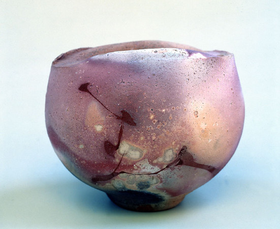

Whether the Asian style technology could be used in other cultures is debatable, yet Japanese raku was reborn and infused in American by Paul Souldner under the western social environment. Although the process of raku in America was affected by a lot of the original Japanese-style raku technology, it still matched with the American spirit and attitude on their life in this age. Eventually, it turned from a conventional craft-making technology to an exotic but also “native” contemporary art form by American culture, society and history.
The technology raku was first invented in 16th century Japan, and its character originally came from the Chinese seal glaze. As one of the most traditional Japanese ceramic firing methods, it was invented by Sen no Rikyūa about 16th century. In conventional Japanese process, it results from the low firing and lead glazes and the removal of pieces from the portable kiln glowing hot. American raku begins from fifty-nine years ago in 1960s, and Paul Soldner, the name has been related with it for a long time. Except him, there are few American potters made in Japanese ruku style before 1960.
Warren Gilbertson, who had studied raku in Japan, presented an exhibition of his work at the Chicago Art Institute in the 1940s. If there would be a man we have to talk about in American raku, that should be him. After the first show exhibited in chicago, it was the first time for American to see this fabulous ceramic work, though he almost imitated the Japanese style tea bowls. This Asian tendency of pottery making has lasted for about 10 years. That was the early history of American raku initiated to be utilized and reached out the art stage in USA.
American raku started off from fifty-nine years ago. With the progress of this firing method processing for more than half a century in America, it is even more prevalent and acceptable that this originally local firing method has been reborn by a typical American style back to the early 1960s in California . Certainly, they both overlap and own several similarities between each other. However, the varied techniques American-style-raku are somewhat disguised with the ancient process in Japan for centuries.
However, it has been a long time that there was still a hard time cataloguing and debating between the Japanese-style raku and American one, though there are truly some distinctions between them. Such as the name of American raku, not only the local Japanese raku organization debated that the name “raku” literally belongs with their own family technology style, but also even the official American artistic organization got some heated arguments about naming this innovative technology. Thus, it is vital to dig out the exploration how American social history shaped a typical Asian technology, then infused a brand new soul into this technique.
Japanese local raku firing has been processing since the 15th century till now. The successive generations of the Raku family are still inheriting and maintaining this ancient ceramic-making technology for more than 400 hundred years. Raku family could be traced back to Tanaka Sokei (born c.1535). Inspired by Chinese tenmoku glaze, the birth of raku wares could be dated back to Raku tea bowls made up by Chojiro. It took some time for Chojiro’s tea bowls to reply to the wabi tea aesthetic style. In contrast to the typical Chinese teaware and early Japanese tea bowls thrown on the wheel, like bowls made in Mino kiln, Chojiro’s Raku wares were hand formed instead. Raku ware started to achieve the ideas from local wabi-cha aesthetic, referring to the early Japanese philosophical expression. Wabi-cha can be defined as a conceptual and philosophical revolution that impacted on various Japanese local lifestyle. The birth of Raku wares represented the cultural flow, and reached out the essence of the Japanese spirit of Wabi-Sabi, by the evolution of their aesthetic construction. From where I stand, the beginning of raku wares in Japan could not be described as a start of technology. Since the appearance of raku firing is nothing about industrialization and productive of a technology, but focuses on attaching with the core of the spiritual thinking inside Japanese society and culture. In other words, the Japanese philosophical system infused and presented on Japanese artistic aesthetic and concept.
So it is coherent that Japanese raku family could not accept the new raku innovation taking place in America as an individual artistic form in the1960s. Raku totally worked as another cultural representation instead of traditional Japanese philosophy. Raku is not only a craft-making technology, but also one of the symbolic representations about Japanese social culture. Even according to the afterwards conventional raku maker Raku Kichizaemon XV and Raku Atsundo’s self introduction about raku making in this age, he still considers American raku as an exploration that was from tradition instead of individual art form which can not be compared with Japanese raku wares. (Figure1)
Nevertheless, the start of American raku technology is not only an exploration from convention. American raku is more than innovation about technology, to the contemporary ceramic arts.( Figure2 ). There is a fundamental distinction between the way of inheriting tradition in the west and a so-called academic flow, in ancient Asia, especially in Japan. The American raku tradition commenced about 59 years ago. Warren Gibetson was the first person who has studied Japanese Raku there, to propose a great show at the Chicago Art Institute in the 1940s, which is considered as the first inspiration about American raku. That was also him who posted an article about raku on the magazine Bulletin of Ameican ceramic society in 1943 to explore this original Asian art around the US. And another rakuwares pioneer, Hal Riegger started to experience with raku firing in the 1940s. He tried to create more universal expressive raku works instead of maintaining the ancient convention from Japanese raku. However, it is kind of ridiculous that eventually Riegger argued the raku stands at the opposite to western philosophical system. Afterwards, some of typical Japanese raku makers still agree with that. Both the early American raku makers has experienced fantastic firing process as the most experimental ceramic pioneers have. As Jennifer Harnetty observed and posted in Ceramics art daily, it says that “I think raku firing intrigues many a potter because of the drama involved in the process. How is it to take out a red-hot piece out of the kiln, see the molten glaze and hear the pings from the thermal shock. And there’s the flame.” It is not ridiculous that the most first inspired american raku makers came out with more freedom and creativity rather than the restriction from the Asian origins. Drama, absurd, and fantasy were the inspiration derived from the artistic Japanese raku ceramics in the 1940s, and also overlaps between the two genres.
However, according to the American ceramic history, it is misconceptual now that the early raku makers separated the tradition and universal creativity. There is no doubt that the explorer started a brand new ceramic technique in the US. But the improvement from Paul Solder intrigues more American potters embrace into this incredible technique. It was through his contribution that raku could be colonized and grafted on the ceramic studio art cross the country. It is Soldner who proposed to point out the distinguishment between American and Japanese raku.
Souldner’s experience about the raku firing process breakthrough some frontiers of the on the original Japanese custom. It’s such a typical American-style change inside the raku revolution. Referring to the copy of Leche’s book a potter’s book, he started to present new ideas about the conventional procedures. Based on the Japanese habits, he totally innovated about the cool-down step which was used to firing slowly and then cooled slowly. “I think Raku warranted a try.” He explained in his own academic reports about American raku. He took a risk quenching the hot-red vessel in cold water to cool down immediately. Besides, he created one more step for raku making to smoke the surface and play with the glaze with the diverse materials, like copper slip. It is not astonishing that he gave up the restrictive raku expression like tea-bowl wares, and academic raku making process, since there was no tea ceremony in western culture that would reply to Japanese traditional significance. With more Souldner’s experience with various technical creation based on the genuine Japanese raku, American raku appeared on the global craft and art stage as a new contemporary art form. In short, Soldier’s revolution on raku presented his revolt and enthusiasm, which exactly reflects the hidden influence by American main current of culture and art in the 1960s.
In the 1960s and early 1970s, after World War II, the modern dream of a world that hoped for a painless trouble reached its peak, and it was the most beautiful dream floating across American society, especially in the west coast. Hippies, suffers, and neoliberalism; they represented the group of the American society which tried to stand against the mainstream culture and challenge the restrictive political tradition and stationary social discipline. During the decade, they oppose war, resisted haircuts, invente new art forms under the influence of LSD, and imagine a future that will transcend Western symbols. Art and life are an integral part of it. The society started to discuss the Panthers, Chicanos and feminists. It is the announcement that called up the Equal Rights. There were full of imagination, freedom, breakthroughs and revolts in American fantastic 60s. Relying on self-publication, their new typical American viewpoints about their life and art later spread around the US.
All the insurgency in the 1960s suggests all the great art revolution took place at the beginning of the 20th century, like the modernist movement. They established the foundation of the contemporary art stage. Also, it was a reconstruction about the cultural trends and the philosophical system in the western society. People following Modernism movement rejected the innate religious belief, the ritual convention, and certainty of enlightenment thinking. The contemporaneity of their work lies in how they initiated breaks with the past and explored the expansive possibilities of what art can be.
Under the progress of modernism, the invisible power of conceptualization reshaped the awareness of the entire society. Like the argument from Kaja Kraner, it says “We could say that modernist art tries to achieve sensual independence (of men) through the medium of sensual (experience): a sensual supersensual (if we borrow from Marx’s reflection on commodity fetishism).” For instance, after the first show of fountain by Duchamp in 1917, the experimental art and concept inspired the whole art world to think about the relationship between the artist, audience and society in the west. Afterwards, all the artistic doctrine are followed with Duchamp’s Dadaism. Like expressionism, and abstractionism etc, they did not only impact the original western art system, but also stroke and diverse the social consciousness in the early 20th century.
With the advancement of modernism and colonization of experimental art in 20 century, the influence of social awareness and cultural trends also spurred the conceptualization in the ceramic field. Peter Vouklos, who was called as the father of American modern ceramic art, was the first person to invite modernism into American ceramic making. He was famous for his abstract expressionism ceramic sculpture which combine the fine art and ceramic craft. In ceramics, his creation and concept were always analogise with Jackson pollock，who represnted the major American figure in abstract expressionism movement. Conceptualization in ceramic making activate ceramicists’ creativity. Artists and ceramicists started to consider ceramics as a contemporary art form. It could be an artistic medium to express artists’ personal perspectives.
This revolution of art never happened voluntarily in asian countries, though it truly influenced the asian contemporary art system in this age. Conventionally, Japanese ceramic makers still believe the pride of purity and authority in raku wares which embraces their ritual respects and daily philosophy. Thus, it is reasonable to hear from Raku Kichizaemon XV generation of raku family to say, “American ceramic makers are more into technology of Raku firing rather than the real aesthetic from profound Japanese aesthetic.” On account of the distinction between the cultural trends and philosophical understanding inside the public society, the orthodoxy of raku drives from two original cultural environment.
This could be the appropriate reason why the modern art movement started in New York, but Kyoto or Tokyo.
Certainly, Paul Soldner’s creativity is one of the most straightforward reasons to change raku. But it is not avoidable to discuss the revolution of raku wares without the support of different countries’ cultural environment and social consciousness. After being drafted into the Army and serving as a medic for three-and-a-half years during World War II, he returned to the United States with a strong interest in art, and the desire to pursue a more artistic career. He earned a bachelor’s degree in Art Education at Bluffton College in Ohio, and then a master’s degree in Arts Administration from the University of Colorado in Boulder Under the mainstream hippies and neoliberalism, it is not hard to speculate that Soldner was exactly affected by this fresh wave of now thinking, especially in the art institution.
At the age of 33, Soldner decided to become a potter. He headed for the Los Angeles County Art Institute, and became Peter Voulkos’s first student, earning a M.F.A. in 1956.after the education with Peter Vouklos, sodlner’s ceramic works emphasized his own concepts and personal expression by raku firing works. They were transcended from ancient craft technique to a contemporary art form worked for ceramic art studio.
Discussion
To a certain extent, American style raku are based on Japanese traditional craft making technology and changed under its own cultural trends and art movement associated with public social awareness and appreciation. The specific technological comparison between American and Japanese raku just evidence superficially the distinguishment about the exact steps. However, it is the social consciousness that decides essentially the reasons why American-style raku innovated and was reborn in the 1960s in the US again. Paul Soldner is not only contributive, meaningful and essential to the entire American ceramic art, but also he was just the shiny representation of the American social culture at that time.
Fig 1. Japanese raku tea-bowl ware by Japanese Raku Family

Fig 2. American-style Raku ware by Paul Soulner
Works Cited
American Ceramic Society “Raku firing: advanced firing” http://librarycat.risd.edu/search~S4?/Xraku&searchscope=4&SORT=D/Xraku&searchscope=4&SORT=D&SUBKEY=raku/1%2C24%2C24%2CB/frameset&FF=Xraku&searchscope=4&SORT=D&2%2C2%2C
Anderson, Tuner “Raku,Pit & Barrel: firing Techniques” American Ceramic Society (2007)
David Jones “Raku: investigations into fire” Trafalgar Square Publishing (March 1, 2000)
Devon Van Houten Maldonado “Hippie Aesthetics Is Not Minimalist: Critique in Meditation” https://www.bbc.com/ukchina/trad/vert-cul-44547392 (2018)
Leduc, Marie. “Journal of Visual Art Practice” Oct.2019, Vol. 18 Issue 3, p257-274, 18p, 5 Chart
Martha Drexler Lynn chapter “American Studio Ceramics: Innovation and Identity” 1940 to 1979
New York, N.Y. Films Media Group,“California Clay in the Rockies” [electronic resource (video)] / MVD Entertainment Group. (2011.)
Raku Kichizaemon XV and Raku Atsundo “Raku: A LEgacy of Japanese Tea Ceramics” KyoÌ"to-shi : TankoÌ"sha, Heisei 25 (2013)
Paul Soulne “Paul Soulner’s self introduction about American-Style Raku” http://www.paulsoldner.com/essays/American_Raku.html”ope=4&SORT=D&SUBKEY=raku/1%2C24%2C24%2CB/frameset&FF=Xraku&searchscope=4&SORT=D&2%2C2%2C
Tim Andrew “A review of contemporary work” A & C Black（1994）
Westerville, Ohio “American Ceramic Society” (2007.)


{kind=link}